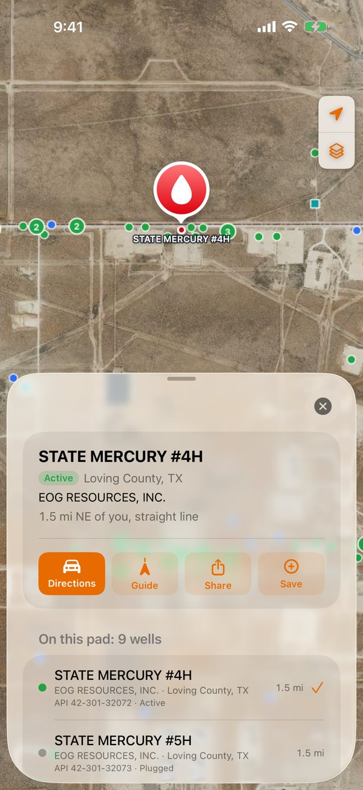
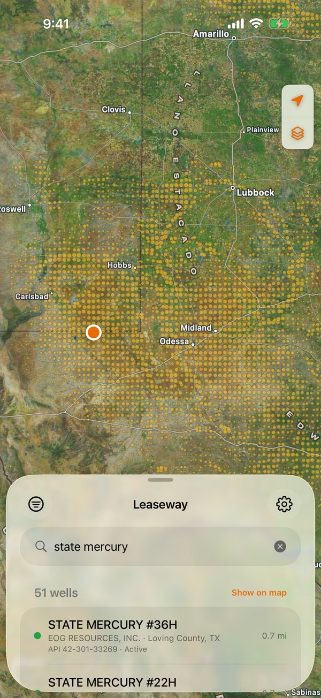
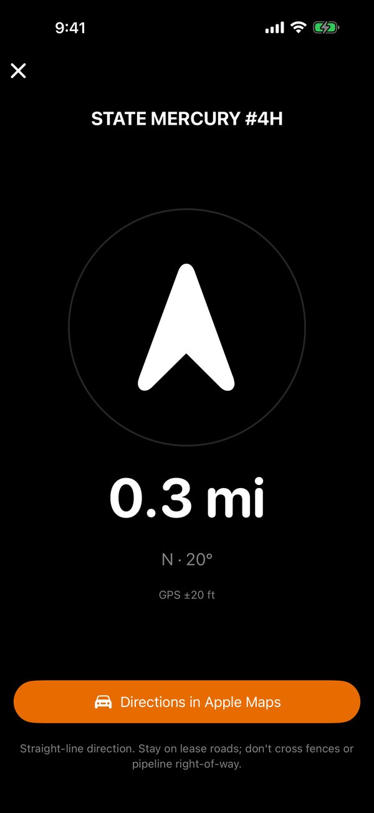
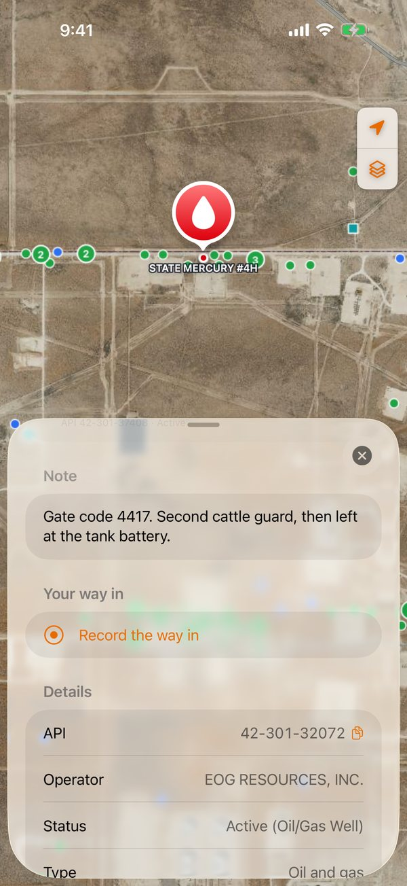
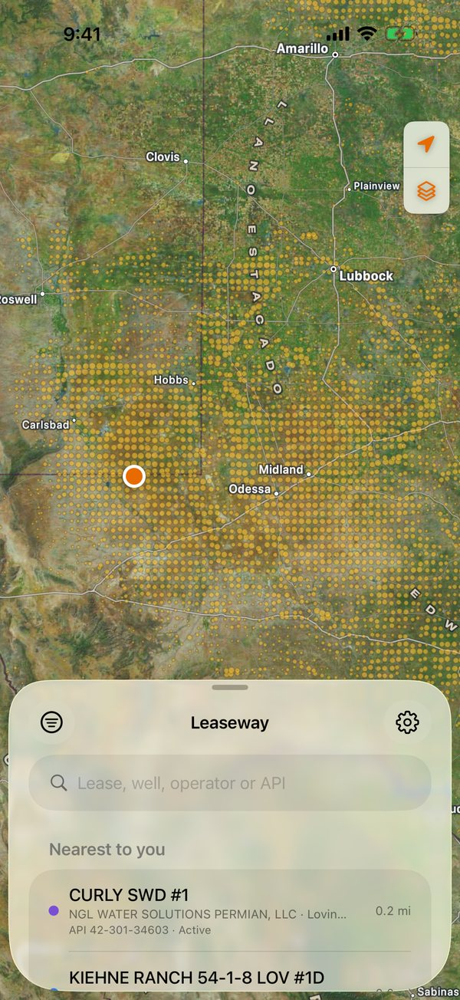
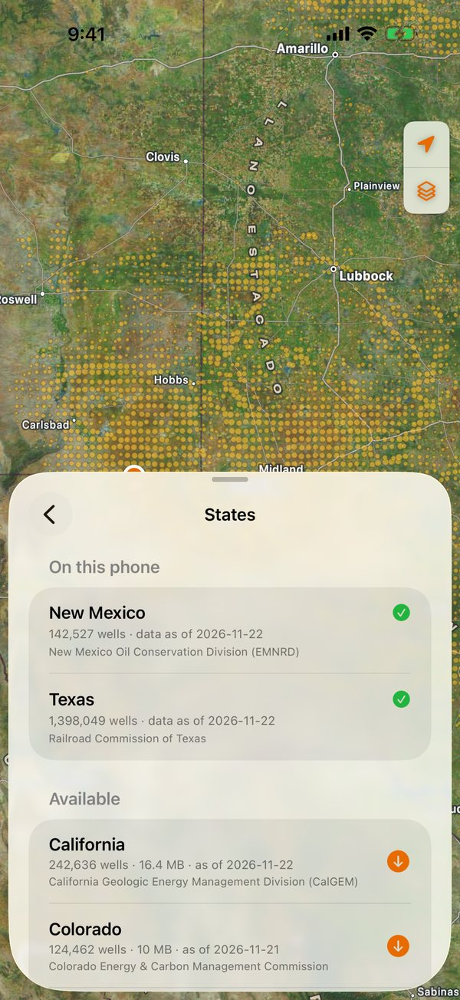

Every well on the pad. And the way in.
Search any oil or gas well the way you were told it: lease name, well number, API number or operator. Leaseway lists every well on the pad, sends you to it in Apple Maps, Google Maps or Waze, and guides you the last mile past where the road ends. 3,312,481 wells in 10 states, on your phone, working with no signal. No account.
UNIVERSITY 7-21 #4H Active · Oil
- Reeves County, Texas2.4 mi NEExample Operating LLC · API 42-389-31203
- On this pad: 6 wells1H–6HAll six listed, nearest first
- Your noteGate code 1234. Second cattle guard, then left at the tank battery.DIRECTIONSGUIDE
Last mile: straight line to the wellhead0.3 mi · NE · 42°
What Leaseway does
Search the way you were told
"University 7-21 4H", "42-389-31203", the last five digits of the API, the 8-digit Texas form, the operator or the county. Results come nearest first, with active wells ahead of plugged ones, so the well you mean is at the top.
Every well on the pad
Wells within about 60 meters are one pad, and the well's screen lists every one of them. On the map, close wells become one numbered badge instead of disappearing, so the 6-well pad shows 6 wells.
Works with no signal
Download a state once and its wells live on your phone: search, the well dots, details, notes and the guide all work in the field with no bars. Texas is about 98 MB; most states are under 40 MB.
Your maps app, your choice
Directions open in Apple Maps, Google Maps or Waze, whichever you pick, every time. Leaseway asks once, the first time, and you can change it in Settings.
The last mile
Where the paved road ends, the guide shows a big arrow, the straight-line distance and the compass direction to the wellhead, using GPS and the compass only, so it works with no signal. It says "You're there" within about 30 meters.
Notes for every well
Gate codes, which cattle guard, where the pad road turns off. Your note shows on the well every time you open it.
Record your way in PRO
Drive in over the lease roads once with recording on. Next time the route is on the map, and you can send it to whoever's driving out as a GPX file. Opening a route someone sends you is free.
Lists and pins
A list for today's run, by customer or chemical; tick wells off as you go and tap Next stop. Drop pins for gates, risers, SWDs and bad crossings.
Fresh from the states, nightly
Leaseway rebuilds every state from its oil and gas agency's own files each night, including new Texas drilling permits, and the app updates downloaded states by itself. Every state shows its data date.
No account
Nothing to sign up for, nothing to get logged out of. No ads, no analytics and no third-party code. Your location is used on your phone only.






The states
Every well each state's oil and gas regulator publishes with a location: active, shut-in, permitted and drilling wells, and plugged, dry and cancelled ones too (hidden on the map unless you ask, always found by search). Pick the states you work in; each downloads once and then updates itself.
| State | Wells | Download | Source | Data as of |
|---|---|---|---|---|
| California | 242,636 | 16.4 MB | California Geologic Energy Management Division (CalGEM) | 2026-11-22 |
| Colorado | 124,462 | 10 MB | Colorado Energy & Carbon Management Commission | 2026-11-21 |
| Kansas | 518,777 | 42 MB | Kansas Geological Survey and Kansas Corporation Commission | 2026-11-13 |
| Montana | 42,062 | 3.4 MB | Montana Board of Oil and Gas Conservation | 2026-11-22 |
| North Dakota | 44,095 | 3.6 MB | North Dakota Industrial Commission, Department of Mineral Resources, Oil and Gas Division | 2026-11-22 |
| New Mexico | 142,527 | 10.7 MB | New Mexico Oil Conservation Division (EMNRD) | 2026-11-22 |
| Ohio | 242,459 | 17.7 MB | Ohio Department of Natural Resources, Division of Oil and Gas Resources Management | 2026-11-22 |
| Oklahoma | 442,517 | 31.7 MB | Oklahoma Corporation Commission | 2026-11-21 |
| Texas | 1,398,049 | 97.5 MB | Railroad Commission of Texas | 2026-11-22 |
| West Virginia | 114,897 | 9 MB | West Virginia Department of Environmental Protection, Office of Oil and Gas | 2026-11-22 |
Counts and dates are from the data Leaseway published on the date shown. Well locations are as filed by operators; a few have no location in the state's files and can't be shown. Need another state? Email us which one. Details: where each state's well data comes from.
Free, and Leaseway Pro
Finding wells is free. Getting to them every day is what Pro is for.
| Feature | Free | Pro |
|---|---|---|
| Every well on the map, in every state you download | Yes | Yes |
| Search by lease, well number, API number or operator | Yes | Yes |
| Well details and every well on the pad | Yes | Yes |
| Notes on every well | Yes | Yes |
| Open routes and pins a crew mate sends | Yes | Yes |
| Trips: directions, the last-mile guide, or a well's coordinates copied or shared | 3 places a week | Unlimited |
| Record your way in and send it as GPX | No | Yes |
| Lists | One list of 15 | Unlimited |
| Pins | 10 | Unlimited |
| Send a whole list or all your pins | No | Yes |
Pro yearly
$79.99 a year
New subscribers get a week free first. Then $79.99 a year, about $6.67 a month.
Pro monthly
$9.99 a month
For a hitch, a season or a job. Cancel any month.
What a trip is
Directions, the guide, or copying or sharing a place's coordinates. Each place counts once a week: going back to a well you've already gone to that week is free. Your 3 free trips start again every Monday.
Our price promise
Subscribers keep the price they signed up at for as long as they stay subscribed. If the price ever changes for new subscribers, the app says so 30 days ahead. No one-time purchase turned into a subscription, ever.
US prices; the App Store shows the price where you are. Billed by Apple, renews automatically until you cancel; cancel any time in Settings › your name › Subscriptions. See the Terms of Use. For comparison, on November 22, 2026 the US App Store listed Wellsite Navigator at $19.99 a month or $199.99 a year, and Petrix Maps and Petro Path at $19.99 a month.
Guides
Plain answers about well records, each linked to its official sources.
- Oil and gas well locations by state: where the free public data comes fromWhere 10 states publish oil and gas well locations for free: Texas RRC, New Mexico OCD, Oklahoma OCC, North Dakota, Colorado ECMC and more, with formats and update schedules.
- How to read an API well numberWhat each digit of an API well number means, the state codes (Texas 42, New Mexico 30, Oklahoma 35), why Texas shows 8 digits, and why one well has several numbers.
Questions
Is Leaseway free?
Yes, to find wells: every well on the map, search by lease, API number or operator, well details, every well on the pad, notes, one list and 10 pins, with no account. The free plan also includes 3 trips a week (directions, the guide, or a well's coordinates copied or shared). Leaseway Pro removes that limit and adds recorded routes, unlimited lists and pins, and sending whole lists, for $9.99 a month or $79.99 a year (a week free for new subscribers), in the US.
Does it work with no cell signal?
Yes, for the wells: once a state is downloaded, search, the well dots, details, notes and the last-mile guide work with no signal, because GPS and the compass don't need one. Apple's street map and satellite imagery behind the dots need a connection unless iOS has them cached from earlier, and turn-by-turn directions are up to your maps app.
Which states are covered?
Texas, New Mexico, Oklahoma, North Dakota, Colorado, Kansas, California, Ohio, Montana and West Virginia: 3,312,481 wells, each from that state's oil and gas regulator. The table above lists each state's source, size and data date.
How current is the data?
Leaseway rebuilds each state from its agency's own files every night and the app updates the states you've downloaded by itself, on Wi-Fi unless you allow cellular. How current that is depends on the state: Texas's map layer is live, its new drilling permits come nightly and its well records twice a week; North Dakota, Colorado and Oklahoma publish daily or nightly files; New Mexico's is a live service. Each state's date is shown in the app.
A well is missing or in the wrong place. What can I do?
Locations come from what operators filed with the state, so a new permit can lag a few days and an old well's location can be off. Use the operator's directions and the lease sign. Then email us the API number and what's wrong: we check it against the state's records, and if our copy is wrong we fix it.
Can I search by API number?
Yes, in any form: 10, 12 or 14 digits, with or without dashes, without the state code (the 8-digit form Texas uses), or just the last five digits. See how to read an API well number.
Does it route me over the lease roads?
Not turn by turn: no public map has every lease road. Your maps app gets you as close as public roads go, then the guide points you to the wellhead in a straight line. With Pro you can record your way in over the lease roads once, follow it next time, and send it to your crew.
Do I need an account?
No. There's nothing to sign up for. Pro is tied to your Apple Account, and Restore Purchases brings it to your other iPhone or iPad.
Does my location leave my phone?
No. Location is used on your phone for distances, the guide and recording routes. Leaseway has no analytics. The only thing the app downloads from our server is the state well files, and the server keeps no access logs. See the privacy policy.
How do I cancel Pro?
Pro is billed by Apple. On your iPhone go to Settings › your name › Subscriptions › Leaseway and cancel at least 24 hours before the current period ends. Your notes, lists, pins and routes stay on your phone.
Which devices?
iPhone and iPad with iOS 17 or later. On iPad, the well panel sits beside the map.
Something not working? The support page has answers, or write to laddothis at gmail dot com. A person answers, usually within one business day.